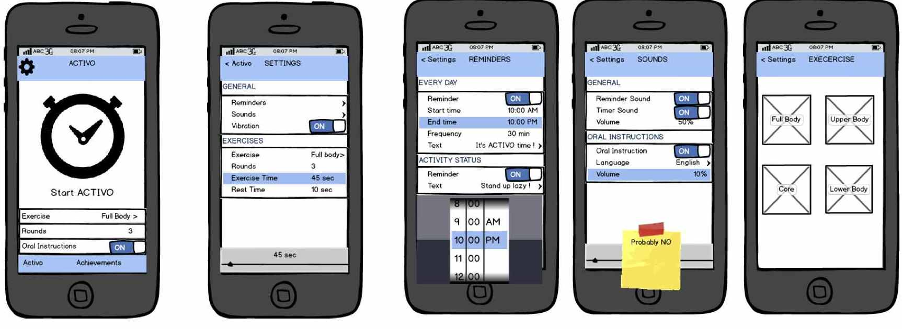

<main class="">
<div class="container">
  <table cellpadding="10">
  <tr>
    <td width="30%" align ="left"> 

      <p> Activo Logo</p>
    </td>
      <td width="40%" align ="justify" valign="top"><h2>Activo</h2><p><i>Activo motivates office workers to exercise when they are sedentary for a long time. The application is sensitive and responsive to the situations and environment of the user. It detects their movements through the phone's built-in accelerometer. When the application recognizes that the user is sitting for more than 30 minutes, it notifies him to exercise a bit and shows him the kind of workout he can do.
    </td>
  </tr>
  <tr>
    <td width="30%" align ="left">
      <p> Activo Design</p>
    </td>
      <td width="40%" align ="justify" valign="top"><p><i> Activo supports three different types of context: User's Activity, Phone Location, Phone Mode. The input and output modalities vary depending on which situation the user is currently at. The input modalities are speech and gesture while the output modalities are vibration, sound, text and image.
    </td>
  </tr>
  <tr>
    
  </tr>
  
</table>

     
<div data-editable-type="text" id="text_1" class="  " data-force-html-mode="false" data-content-module-unique-id="">

      <p><i>This project was done in collaboration with David Jan Mercado, Seren Thompson, and Panagiota Tziova.</i></p>    
</div>
    </div>
  </main>